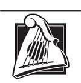

Tehlikeli Sözler
Lord Barthanes'in malikanesi gecenin içinde dev bir kurbağa gibi çömelmiş, bütün surları ve ek binalarıyla birlikte kale kadar geniş bir alanı kaplıyordu. Ancak bir kale değildi, dört bir yanındaki uzun, aydınlık pencerelerinden müzik ve kahkaha sesleri duyuluyordu, yine de Rand kulelerin tepesinde ve çatılarda yürüyen Muhafızlar gördü ve pencerelerin hiçbiri yere yakın değildi. Kızıl'ın sırtından inip ceketini düzeltti, kılıcının kemerini ayarladı. Diğerleri de etrafında, malikanenin geniş, bol kabartmalı kapılarına çıkan beyaz taş basamakların dibinde atlarından indiler.
Uno'nun komutasındaki Shienarlılar bir refakatçi birliği oluşturmuştu. Tek gözlü adam, askerlerini alıp, diğer refakatçilerin yanında, bira ikram edilen ve bütün bir sığırın büyük bir ateşin üzerinde şişe geçirilmiş kızartıldığı yere götürmeden önce Ingtar'la birbirlerine hafifçe kafa salladılar.
Geriye kalan on Shienarlı, Perrin'le birlikte arkada bırakılmıştı. Verin hepsinin orada bulunmalarının bir amacı olması gerektiğini söylemişti ve o gece Perrin'in bir amacı yoktu. Cairhienlilerin gözlerinde saygın olmak için bir refakatçi birliği gerekliydi, ama on kişiden fazlası şüpheli görünürdü. Rand'ın orada bulunmasının nedeni davetiyeyi almasıydı. Ingtar unvanının prestijiyle katkıda bulunmak için gelmişti, Loial'in orada olmasının nedeni de Ogierlerin Cairhien asil sınıfının üst kademelerinde aranan bir ırk olmasıydı. Hurin Ingtar'ın uşağı rolündeydi. Asıl amacı becerebilirse Karanlıkdostları ile Trollocların kokusunu almaktı; Valere Borusu onlardan pek uzak olmasa gerekti. Mat, hançeri yakınında olduğu zaman hissedebildiğinden, hâlâ bu yüzden homurdanmasına rağmen, Rand'ın uşağı rolündeydi. Hurin başarısız olursa, belki Karanlıkdostlarını o bulabilirdi.
Rand Verin'e kendisinin hangi nedenle orada olduğunu sorduğunda kadın yalnızca gülümseyip, "Başınızın belaya girmesini önlemek için," demişti.
Merdivenleri çıkarlarken, Mat, "Neden uşak olmam gerekiyormuş, hâlâ anlamadım," dedi. O ile Hurin diğerlerinin gerisinden geliyorlardı. "Kahrolayım, Rand lord olabiliyorsa, ben de süslü bir ceket giyebilirim."
"Sessiz ol, Mat," diye araya girdi Ingtar, "eğer bizi ele vermek istemiyorsan." Göğüslerinde Damodred Hanedanı'nın Ağaç ve Tacını taşıyan on iki Muhafızın ve onlarla aynı sayıda, kolunda Ağaç ve Taç Arması taşıyan koyu yeşil uşak elbiseleri giymiş adamın beklediği kapılara yaklaşıyorlardı.
Rand derin bir nefes alarak davetiyeyi uzattı. "Ben Al'Thor Hanedanı'ndan Rand al'Thor," dedi bir an önce bitsin diye aceleyle. "Bunlar da konuklarım. Kahverengi Ajah'tan Verin Aes Sedai. Shienarlı Shinowa Hanedanı'ndan Lord Ingtar. Shangtai Yurdu'ndan Halan oğlu Arent oğlu Loial." Loial yurdunu işe karıştırmamalarını istemiş, ama Verin ellerinden geldiğince resmi olmaları gerektiğinde ısrar etmişti.
Üstünkörü bir selamla davete uzanan hizmetkâr duyduğu her isimle birlikte hafifçe irkildi; Verin'inkini duyduğunda gözleri yuvalarından fırladı. Boğuk bir sesle, "Damodred Hanedanı'na hoş geldiniz, lordlarım. Hoş geldiniz, Aes Sedai. Hoş geldin, dost Ogier." Diğer hizmetkârlara kapıları ardına kadar açmalarını işaret etti ve Rand ile diğerlerini eğilerek kapıdan geçirdikten sonra davetiyeyi aceleyle diğer bir üniformalı adama verip adamın kulağına bir şeyler fısıldadı.
Bu adamın göğsüne koca bir Ağaç ve Taç arması işlenmişti. "Aes Sedai," dedi her birine sırayla uzun asasını kullanıp, neredeyse başı dizlerine değecek kadar eğilerek. "Lordlarım. Dost Ogier. Benim ismim Ashin. Lütfen beni izleyin."
Dıştaki salonda yalnızca hizmetkârlar vardı, ama Ashin onları soylularla dolu, bir ucunda jonglörün, diğer ucunda da akrobatların gösteri yapmakta olduğu bir salona götürdü. Başka yerlerden gelen insan ve müzik sesleri yegâne konukların ya da yegâne eğlencenin onlar olmadığını gösteriyordu. Asiller ikili, üçlü ve dörtlü, bazen de erkek kadın karışık gruplar halinde, kimse konuştuklarını duymasın diye her zaman arada boşluk bırakmaya özen göstererek duruyorlardı. Konukların üzerinde her birinin göğsünde en azından göğsünün yarısına kadar, bazılarında da bele kadar inen parlak çizgiler olan koyu renkli Cairhien giysileri vardı. Kadınların saçları hepsi birbirinden farklı, bukleli yüksek topuzlar halinde toplanmıştı ve koyu renkli etekleri o kadar genişti ki, malikanedekilerden daha dar olan herhangi bir kapıdan geçmek için yarı dönmek zorunda kalırlardı. Adamların hiçbirinin başı askerlerinki gibi tıraşlı değildi -hepsi de uzun saçlarının üzerine koyu renkli kadifeden şapkalar takmıştı, şapkaların bazıları çan şeklinde, diğerleri düzdü- ve kadınlarda olduğu gibi koyu renkli fildişine benzeyen dantel fırfırlar ellerini neredeyse tamamen gizliyordu.
Ashin asasını yere vurdu ve Verin'i en başta olmak üzere, onları yüksek sesle ilan etti.
Herkesin gözü üzerlerinde toplandı. Verin'in üzerinde asmalarla işli, kahverengi saçaklı şalı vardı; bir Aes Sedai'nin ilan edilişi lordlar ve leydiler arasında bir mırıltı dolaşmasına ve onu izleyen kimse kalmamış olsa da jonglörün halkalarından birini düşürmesine neden oldu. Ashin adını söylemeden önce bile Loial neredeyse Verin kadar çok kişinin bakışlarını üzerine çekti. Yaka ve kollarındaki gümüş işlemelere rağmen, Rand'ın ceketinin siyah rengi Cairhienlilerin yanında neredeyse sade görünmesine neden oluyordu ve pek çok kişi Ingtar ile ikisinin kılıçlarına dönüp bakıyordu. Lordların hiçbiri silahlı görünmüyordu. Rand en az bir kez "balıkçıl nişanlı kılıç" sözlerini duydu. Ona atılan bakışlardan bazıları kaş çatışa benziyordu; bunların davetiyelerini yakarak hakaret ettiği adamlardan geldiğinden kuşkulanıyordu.
İnce yapılı, yakışıklı bir adam onlara doğru yaklaştı. Kırlaşan uzun saçları vardı ve gri ceketinin üzerindeki çok renkli çizgiler boynundan neredeyse ceketinin dizlerinin hemen üzerindeki eteğine kadar iniyordu. Bir Cairhienliye göre olağanüstü derecede uzun boyluydu, Rand'dan en fazla yarım kafa boyu kadar kısaydı ve çenesini havaya kaldırarak herkese adeta tepeden bakarmış gibi durduğundan, daha da uzun görünüyordu. Gözleri siyah çakıl taşlarıydı. Ancak Verin'e ihtiyatla bakıyordu.
"Huzur beni sizin varlığınızla onurlandırdı, Aes Sedai." Barthanes Damodred'in sesi tok ve kendinden emindi. Bakışları diğerlerini taradı. "Bu kadar seçkin konuklar beklemiyordum. Lord Ingtar. Dost Ogier." Her birine en çok başını hafifçe eğerek selam vermişti; Barthanes tam olarak ne kadar güçlü olduğunu biliyordu. "Ve siz, genç Lordum Rand. Şehirde ve Hanedanlarda epey heyecan uyandırdınız. Belki bu gece konuşma fırsatını buluruz." Ses tonundan asla fırsat bulamasa da bunun eksikliğini hissetmeyeceğini, hiçbir şekilde heyecanlanmadığını söylüyordu, ama gözleri bir an Ingtar ile Loial'e ve Verin'e kaydı. "Hoş geldiniz." Yüzüklerle dolu, dantellere gömülmüş ellerinden birini koluna koyan güzel bir kadının onu oradan götürmesine göz yumdu, ama uzaklaşırken gözleri Rand'a takıldı.
Sohbetin uğultusu tekrar başladı ve jonglör halkalarını neredeyse işli alçı tavana ulaşan, en az dört kulaç uzunluğunda, dar bir çember halinde çevirmeye döndü. Akrobatlar hiç durmamıştı; bir kadın, yurttaşlarından birinin birleştirdiği ellerine basarak havaya sıçradı; havada dönerken yağlı teni yüz lambanın ışığında parlıyordu ve başka bir adamın omuzlarında duran bir adamın omuzlarına indi. Aşağıdaki adam onu havaya uzattığı kollarıyla havaya kaldırırken adam da kadını aynı şekilde kaldırdı ve kadın alkış beklermiş gibi kollarını yana açtı. Cairhienlilerden hiçbiri fark etmiş gibi görünmüyordu.
Verin ile Ingtar kalabalığın içine süzüldüler. Shienarlı birkaç temkinli bakışı üzerinde topladı; bazıları Aes Sedai'ye fal taşı gibi açılmış gözlerle, diğerleri bir kol uzunluğunda kuduz bir kurtla karşılaşanların endişeli kaş çatışlarıyla bakıyordu. İkinci türden bakışlar kadınlardan çok erkeklerden geliyordu ve kadınlardan bazıları onunla konuştu.
Rand, Mat ile Hurin'in çoktan konuklarla birlikte gelen tüm uşakların haber gönderilene kadar bekleyeceği mutfağa doğru kaybolduklarını fark etti. Oradan gizlice kaçarken pek zorluk çekmemelerini ümit ediyordu.
Loial sadece onun kulağına fısıldamak için eğildi. "Rand, yakınlarda bir Yolkapısı var. Bunu hissedebiliyorum."
Rand usulca, "Burasının bir Ogier korusu olduğunu mu söylemeye çalışıyorsun?" dedi ve Ogier başıyla evetledi.
"Tsofu Yurdu ağaçları dikildiğinde tekrar bulunmamıştı, Al'cair'rahienallen'in inşasına yardım eden Ogierler de onlara yurdu hatırlatmak için bir koruya ihtiyaç duymazlardı. Daha önce Cairhien'e geldiğimde bütün buralar ormandı ve Kral'a aitti."
"Muhtemelen Barthanes bir entrika çevirip onun elinden almıştır." Rand odaya tedirginlikle göz gezdirdi. Herkes hâlâ konuşuyordu, ama onunla Ogier'i izleyenler birkaç kişiden fazlaydı. Ingtar'ı göremedi. Verin kadınlardan bir düğümün ortasında duruyordu. "Keşke bir arada durabilseydik."
"Verin öyle olmaması gerektiğini söylüyor, Rand. Bunun hepsini şüphelendirip kızdıracağını, kendimizi uzak tuttuğumuzu düşünmelerine neden olacağını söylüyor. Mat ile Hurin bulacakları şeyi bulana kadar şüpheleri üzerimizden uzak tutmamız gerek."
"Ben de senin gibi onun ne dediğini duydum, Loial. Ama ben yine de diyorum ki, Barthanes bir Karanlıkdostu ise, neden burada olduğumuzu biliyor olması gerekir. Tek başımıza uzaklaşmak kafaya bir darbe yemek için aranmak demektir."
"Verin bizden yararlanıp yararlanamayacağını öğrenene kadar bir şey yapmayacağını düşünüyor. Bize söylediğini yap, Rand. Aes Sedailer işlerini bilir." Loial kalabalığa karışarak on adım atmadan etrafına lordlarla leydilerden oluşan bir çember topladı.
Artık yalnız olduğunu gören diğerleri Rand'a doğru yürümeye başladılar, ama o ters yöne dönüp aceleyle uzaklaştı. Aes Sedailer işlerini biliyor olabilir, ama keşke ben bilseydim. Bundan hoşlanmıyorum. Işık adına, keşke doğruyu söyleyip söylemediğini bilseydim. Aes Sedailer asla yalan söylemez, ama duyduğun gerçek, olduğunu sandığın gerçek olmayabilir.
Asillerle konuşmaktan kaçınmak için hareket etmeye devam etti. Tümü de lordlar ve leydilerle dolu, hepsinde de birilerinin gösteri yaptığı, bir sürü oda vardı: pelerinleri içinde üç farklı âşık, daha fazla jonglör ve akrobat ile flüt, kanun, santur, kopuzun yanında beş farklı türde keman, altı çeşit, düz, kıvrık veya büklümlü boru ile büyük davul ile timbal arasında değişen on cins davul çalan müzisyenler. Kıvrık borular çalanların bazılarına ikinci kez dönüp baktı, ama çalgıların hepsi düz pirinçtendi.
Valere Borusu'nu buraya çıkarmazlar, seni ahmak, diye düşündü. Barthanes, eğlenceye, ölmüş kahramanları katmayı düşünmüyorsa.
Gümüşle işli Tear çizmeleri ve sarı bir ceket giymiş, harpının tellerini çekerek ve zaman zaman durup yüksek anlatımda nutuk çekerek odalar arasında gezinen bir şarkıcı bile vardı. Âşıklara küçümseyerek baktı ve onların olduğu odalarda pek oyalanmadı, ama Rand onunla âşıklar arasında, giysileri dışında pek bir fark göremedi.
Birden Barthanes de orada belirivermiş, yanında yürümeye başlamıştı. Üniformalı bir hizmetkâr hemen eğilerek gümüş tepsisini ona sundu. Barthanes kahverengi camdan bir kadeh içindeki şarabı aldı. Tepsiyi taşıyan hizmetkâr önlerinde geri geri yürüyerek tepsiyi Rand'a ikram etti, Rand başını iki yana sallayınca da kalabalığın içine karıştı.
"Huzursuz bir haliniz var," dedi Barthanes şarabından bir yudum alarak.
"Yürümeyi severim." Rand, Verin'in tavsiyesine nasıl uyabileceğini merak etti ve kadının Amyrlin'i ziyareti hakkında söylediklerini hatırlayarak Avluyu Geçen Kedi duruşunu aldı. Bundan daha kibirli bir yürüyüş bilmiyordu. Barthanes'in ağzı sıkılaştı ve Rand belki de lordun bu yürüyüşü fazla kibirli bulduğunu düşündü, ama elindeki tek şey Verin'in tavsiyeleri olduğundan, durmadı. Keskinliğini bir parça azaltmak için, candan bir tavırla, "Bu iyi bir parti. Pek çok dostunuz var, bu kadar çok eğlendiriciyi de bir arada görmemiştim," dedi.
"Pek çok," diye onayladı Barthanes. "Galldrian'a sayılarını ve kim olduklarını söyleyebilirsin. Adlardan bazıları onu şaşırtabilir."
"Kral'la asla tanışmadım, Lord Barthanes ve tanışacağımı da sanmıyorum."
"Elbette. O sinek kadar küçük köyde tesadüfen bulunuyordunuz. O heykelin çıkarılması işine nezaret ediyor değildiniz. Büyük bir teşebbüs."
"Evet." Rand tekrar Verin'i düşünmeye, yalan söylediğini varsayan bir adamla nasıl konuşması gerektiği hakkında tavsiyeler vermiş olmasını dilemeye başlamıştı. Düşünmeden ekledi, "Ne yaptığını bilmiyorsan Efsaneler Çağı'ndan kalan şeylerle uğraşmak tehlikelidir."
Barthanes, Rand az önce çok derin bir laf etmiş gibi, düşünceli bir tavırla şarabına baktı. "Bu konuda Galldrian'ı desteklemediğinizi mi söylüyorsunuz?"
"Size söyledim. Kral'la asla tanışmadım."
"Evet, elbette. Andorluların Büyük Oyun'u bu kadar iyi oynadığını bilmezdim. Cairhien'de onlardan fazla görmeyiz."
Rand adama Büyük Oyun'u oynamadığını öfkeyle söylemekten kendini alıkoymak için, derin bir nefes aldı. "Nehir'de, Andor'dan gelen tahıl yüklü pek çok mavna var."
"Tacirler. Onlar gibileri kim fark eder ki? Yapraklardaki kınkanatlı böcekleri ne kadar fark edersek, onları da o kadar fark ederiz." Barthanes'in sesinde hem kınkanatlılar, hem de tacirlere karşı eşit bir horgörü okunuyordu, ama adam bir kez daha, Rand bir şey ima etmiş gibi kaşlarını çattı. "Bir Aes Sedai'yle yolculuk eden pek çok adam yoktur. Muhafız olamayacak kadar genç görünüyorsunuz. Sanırım Verin Sedai'nin Muhafızı Lord Ingtar, öyle değil mi?"
"Bizler, olduğumuzu söylediğimiz kişileriz," dedi Rand ve yüzünü buruşturdu. Ben hariç.
Barthanes neredeyse açıktan açığa Rand'ın yüzünü inceliyordu. "Genç. Balıkçıl nişanlı bir kılıç taşımak için genç."
"Bir yaşımdan gün almadım," dedi otomatik olarak ve aynı anda söylediğine pişman oldu. Kendi kulağına aptalca gelmişti, ama Verin ona aynı Amyrlin Makamı'nın yanındayken olduğu gibi davranmasını söylemişti ve bu da Lan'in ona verdiği yanıttı. Bir Sınırboylu kılıcını aldığı günü, isim yortusu olarak kabul ederdi.
"Demek öyle. Bir Andorlu, ancak Sınırboylu tarafından eğitilmiş. Yoksa bir Muhafız tarafından eğitilmiş mi demeliyim?" Barthanes'in Rand'ı süzen gözleri kısıldı. "Anladığım kadarıyla Morgase'in bir tek oğlu var. Duyduğum kadarıyla adı Gawyn'miş. Aşağı yukarı aynı yaşta olsanız gerek."
"Onunla tanıştım," dedi Rand ihtiyatla.
"Bu gözler. Bu saç. Andor kraliyet soyunun saçlarıyla gözlerinin neredeyse Aiel renklerinde olduğunu duymuştum."
Zemin pürüzsüz mermerle döşenmiş olmasına rağmen, Rand tökezledi. "Ben Aiel değilim, Lord Barthanes, kraliyet soyundan da değilim."
"Nasıl isterseniz. Bana düşünecek çok fazla şey verdiniz. Tekrar konuştuğumuzda, ortak bir zemin bulabileceğimize inanıyorum." Barthanes başıyla onayladıktan sonra kadehini kaldırarak ufak bir selam verdi, sonra da ceketinde bolca renkli şerit olan, ak saçlı bir adamla konuşmak üzere döndü.
Rand başını iki yana sallayıp, sohbetlerden uzaklaşmak için yürümeye devam etti. Bir Cairhienli lordla konuşmak yeterince kötü olmuştu; iki tanesiyle konuşma riskine atılmak istemiyordu. Barthanes en gelişigüzel laflarda bile derin anlamlar bulur gibiydi. Rand, Daes Dae'mar hakkında, nasıl oynandığı hakkında hiçbir fikri olmadığını anlayacak kadar bilgi edinmişti. Mat, Hurin, hemen bir şey bulun ki, buradan çıkabilelim. Bu insanlar delirmiş.
Sonra başka bir odaya girdi ve odanın ucundaki, harpının tellerine dokunan ve Büyük Boru Avı'nı anlatan bir öykü okuyan âşık Thom Merrilin'den başkası değildi. Rand olduğu yerde kalakaldı. Âşığın bakışları iki kez Rand'ın üzerinden geçmiş gibi görünse de, âşık onu görmemiş gibiydi. Görünüşe göre Thom söylediklerinde kararlıydı. Temiz bir kopuş.
Rand gitmek üzere arkasını döndü, ama bir kadın zerafetle önünde durdu ve yumuşak bileğinden danteller dökülen bir elini Rand'ın göğsüne koydu. Kadının başı Rand'ın omzuna bile gelmiyordu, ama bukleli, yüksek topuzu Rand'ın göz hizasına kadar çıkıyordu. Giysisinin yüksek yakası, çenesinin altını dantelden fırfırlarla dolduruyor, çizgiler koyu mavi elbisesinin önünün göğüs altında kalan kısımlarını kaplıyordu. "Ben Alaine Chuliandred, siz de meşhur Rand al'Thor'sunuz. Burası Barthanes'in malikanesi olduğuna göre sizinle ilk konuşma hakkı ona ait olsa gerek, ama hepimiz hakkınızda duyduğumuz şeylerden büyülendik. Flüt çaldığınızı bile duydum. Bu doğru olabilir mi?"
"Flüt çalarım." Nasıl...? Caldevwin. Işık adına, Cairhien'de herkes her şeyi duyuyor. "Bana izin verirseniz-"
"Bazı dışarlıklı lordların müzik yaptığını duymuş, ama buna hiç inanmamıştım. Flüt çalmanızı dinlemeyi çok isterdim. Belki benimle havadan sudan konuşursunuz. Barthanes sohbetinizi büyüleyici bulmuş gibiydi. Kocam günlerini kendi üzüm bağlarının ürünlerini tadarak geçirip beni çok yalnız bırakıyor. Hiç yanımda kalıp benimle konuşmuyor."
"Onu özlüyorsunuzdur herhalde," dedi Rand kadının ve geniş eteklerinin yanından geçmeye çalışarak. Rand dünyadaki en komik şeyi söylemiş gibi kadın çınlayan bir kahkaha attı.
Diğer bir kadın ikincinin yanına yaklaştı ve Rand'ın göğsüne bir el daha konuldu. Bu kadının da üzerinde Alaine kadar çok çizgi vardı ve ikisi de aynı yaşta, nereden baksan Rand'dan on yaş büyüktüler. "Onu kendine saklamayı mı düşünüyorsun, Alaine?" Gözleri hançerler savururken iki kadın birbirlerine gülümsediler. İkinci kadın gülümsemesini Rand'a çevirdi. "Ben Belevaere Osiellin. Bütün Andorlular bu kadar uzun boylu mudur? Ve bu kadar yakışıklı?"
Rand genzini temizledi. "Ah... bazıları benim kadar uzun boyludur. Beni affedin, ama eğer-"
"Sizi Barthanes'le konuşurken gördüm. Galldrian'ı da tanıyormuşsunuz. Bana sohbete gelmeniz gerek. Kocam güneydeki mülklerimizi ziyaret ediyor."
Alaine ona, "Bir meyhane fahişesi kadar inceliklisin," diye tısladı ve hemen Rand'a gülümsedi. "Onda zerafet namına hiçbir şey yok. Hiçbir erkek bu kadar kaba tavırlı bir kadından hoşlanmaz. Flütünüzü benim malikaneme getirin, sohbet edelim. Belki bana da çalmayı öğretirsiniz?"
"Alaine'in zerafet olduğunu sandığı şey," dedi Belevaere tatlılıkla, "cesaret eksikliğinden ibaret. Balıkçıl nişanlı bir kılıç taşıyan bir adam cesur olsa gerektir. O gerçekten balıkçıl nişanlı bir kılıç, değil mi?"
Rand geri çekilerek onlardan uzaklaşmayı denedi. "Bana müsaade ederseniz, ben-" Sırtı duvara dayanana kadar onu adım adım izlediler; etekleri yan yana gelince önünde ikinci bir duvar oluşturuyordu.
Üçüncü bir kadın diğer ikisinin yanına sıkışıp, eteğiyle bu duvara eklenince Rand sıçradı. Kadın onlardan da yaşlıydı, ama onlar kadar güzeldi, gözlerinin keskinliğini azaltmayan, alaylı bir gülümsemesi vardı. Üzerinde Alaine ile Belevaere'nin bir buçuk misli çizgi vardı; ufak reveranslar yapıp ona asık suratlarla dik dik baktılar.
"Bu iki örümcek sizi ağlarına mı dolamaya çalışıyor?" Yaşça büyük olan kadın güldü. "Çoğu zaman kendilerini başka birini olduğundan daha sıkı dolarlar. Gelin benimle, genç Andorlu, size başınıza açacakları sorunları anlatayım. En başta, benim düşünecek bir kocam yok. Kocalar her zaman sorun çıkarır."
Rand Alaine'in başının üzerinden, hiçbir alkış veya takdir işareti olmamasına rağmen eğilerek selam verdikten sonra doğrulan Thom'u görebiliyordu. Âşık yüzünü buruşturarak bir hizmetkârın tepsisinden bir kadeh kaparak hizmetkârı şaşırttı.
Rand kadınlara, "Konuşmam gereken birini gördüm," dedi ve kadınların sonuncusu koluna doğru uzanırken onu kapadıkları kutunun içinden zorla çıktı. Âşığın yanına seğirtirken üçü de arkasından bakakaldılar.
Thom kadehin üzerinden ona baktıktan sonra büyük bir yudum daha aldı.
"Thom, temiz bir ayrılık demiştin, biliyorum, ama o kadınlardan uzaklaşmam gerekiyordu. Tek konuşmak istedikleri kocalarının uzakta olduğuydu, ama çoktan başka şeyler ima etmeye başlamışlardı." Thom'un şarabı boğazına kaçtı ve Rand sırtına vurdu. "Çok hızlı içersen bir şey her zaman yanlış tarafa gider. Thom, Barthanes'le ya da belki Galldrian'la entrika çevirdiğimi düşündüklerini sanıyorum ve öyle olmadığını söylesem bile bana inanmayacaklarını düşünüyorum. Sadece yanlarından ayrılmak için bir bahaneye ihtiyacım vardı."
Thom bir parmak boğumuyla uzun bıyıklarını ovuşturdu ve odanın öte yanındaki üç kadına baktı. Hâlâ bir arada durmuş, Rand'la onu izliyorlardı. "O üçünü tanıdım, evlat. Breane Taborvin tek başına sana her adamın hayatında bir kez alması gereken bir eğitimi verebilir, adam bu eğitimden sağ çıkarsa tabiî. Kocaları yüzünden endişeleniyorsun demek. Bunu sevdim, evlat." Gözlerindeki ifade birden sertleşti. "Bana Aes Sedailerden kurtulduğunu söylemiştin. Bu gece burada konuşulan iki konudan biri, Andor lordunun hiç yoktan, üstelik de yanında bir Aes Sedai'yle birlikte ortaya çıkışı. Barthanes ve Galldrian. Bu defa Beyaz Kule'nin seni kaynar kazana atmasına izin vermişsin."
"Daha dün geldi, Thom. Boru güvende olur olmaz da, onlardan yine kurtulacağım. Bunu yapmaya niyetliyim."
"Şu anda güvende değilmiş gibi konuşuyorsun," dedi Thom yavaşça. "Daha önce böyle konuşmuyordun."
"Onu Karanlıkdostları çaldı, Thom. Buraya getirdiler. Barthanes de onlardan biri."
Thom şarabını inceler gibi gözüktü, ama onları dinleyecek kadar yakında kimsenin olmadığından emin olmak için çevreyi hızla kolaçan etti. Üç kadının dışında kendi aralarında sohbet edermiş gibi yapıp onları izleyen başkaları da vardı, ama düğümlerden her biri diğeriyle uzaklığını koruyordu. Yine de Thom alçak sesle konuştu. "Doğru değilse, söylemesi tehlikeli bir şey, doğruysa da daha tehlikeli. Krallıktaki en güçlü adama karşı böyle bir itham... Boru onda mı diyorsun? Herhalde bir kez daha Beyaz Kule'nin işlerine karıştığından benim yardımımı istiyorsun."
"Hayır." Rand, âşık bunun nedenini bilmese de Thom'un haklı olduğuna karar vermişti. Başındaki dertlere başka kimseyi katamazdı. "O kadınlardan uzaklaşmak istedim, o kadar."
Şaşıran âşık üfürerek bıyıklarını havalandırdı. "İyi. Evet. Bu iyi. Sana son yardım ettiğimde, topal kaldım, sen de Tar Valon iplerine dolanmaya razı olmuş görünüyorsun. Bu defa bu işten kendi başına sıyrılmak zorunda kalacaksın." Kendi kendisini ikna etmeye çalışıyormuş gibi bir hali vardı.
"Sıyrılacağım, Thom. Sıyrılacağım." Boru güvende olur ve Mat o kahrolası hançeri geri alır almaz. Mat, Hurin, neredesiniz?
Bu düşünce bir çağrıymış gibi, Hurin odada belirdi, gözleri lordlarla leydilerin arasında onu arıyordu. Lordlarla leydiler onu görmedi bile, hizmetkârlar gerekli olmadıkları sürece ortalıkta olmazdı. "Lordum, size haber vermek üzere gönderildim. Hizmetkârınız düşüp dizini burktu. Ne kadar kötü olduğunu bilmiyorum, Lordum."
Rand bir an boş boş baktıktan sonra anladı. Tüm gözlerin üzerinde olduğunu unutmadan, en yakındaki asillerin onu duyabileceği kadar yüksek sesle konuştu. "Sakar ahmak. Yürüyemezse ne işime yarar ki? Herhalde gelip durumunun ne kadar ciddi olduğunu görmem gerekecek."
Söylenmesi gereken en doğru şey buymuş gibi görünüyordu. Hurin, tekrar eğildiğinde rahatlamış gibiydi. "Lordum nasıl isterse. Lordum beni izler mi?"
"Lord rolünü çok iyi yapıyorsun," dedi Thom usulca. "Ama şunu unutma. Cairhienliler Daes Dae'mar'ı oynuyor olabilir, ama en başta Büyük Oyun'u yaratan Beyaz Kule'ydi. Kendine dikkat et, evlat." Asillere öfkeli bir bakış atarak boş kadehini yanından geçen bir hizmetkârın tepsisine bırakıp harpını tıngırdatarak uzaklaştı. Zevce Mili ile İpek Taciri'ni okumaya başladı.
Rand kendini aptal gibi hissederek, Hurin'e "Önden git," dedi. Koklayıcının peşinden odayı terk ederken, onu izleyen gözleri, hissedebiliyordu.